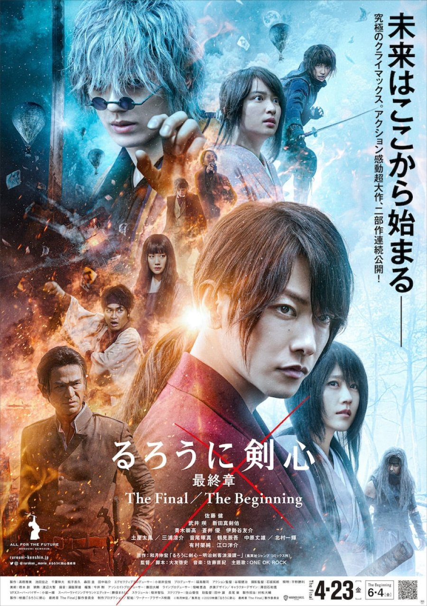
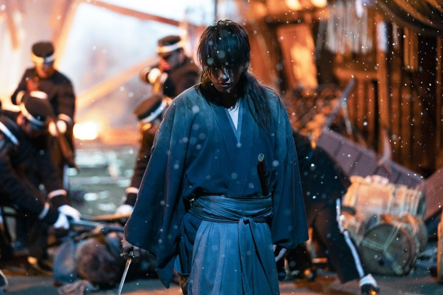
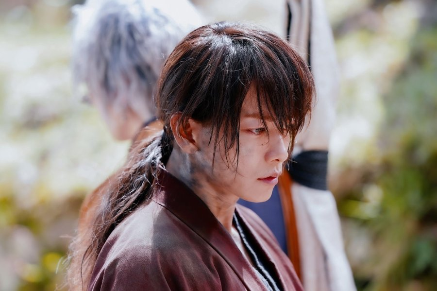
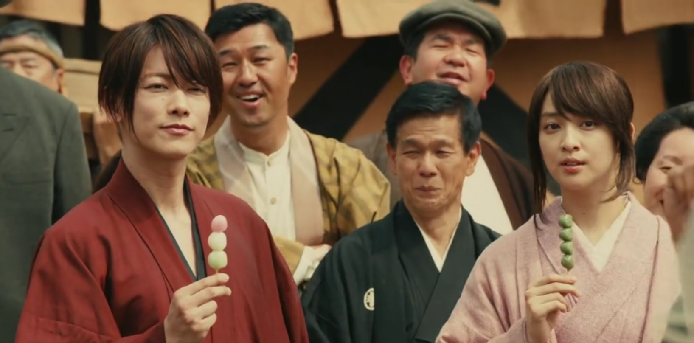
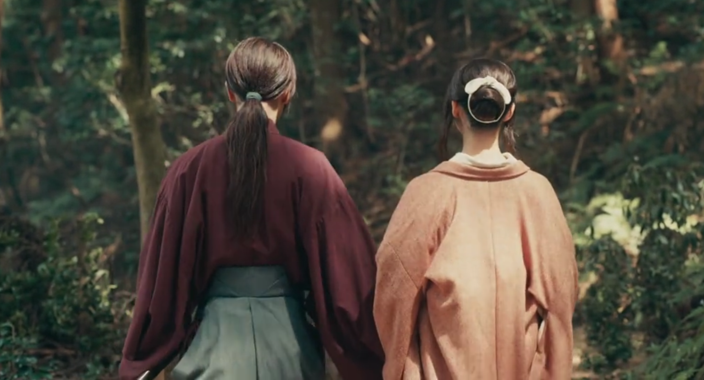

|  | ||
| Film | : | Rurouni Kenshin: The Final |
| Peringkat/Nilai | : | 8.5/10 dari 1.788 pengguna |
| Negara | : | Jepang |
| Tanggal Rilis | : | Apr 23, 2021 |
| Durasi Film | : | 2 hr. 18 min. |
| Peringkat Konten | : | G - Semua Usia |
| Genre | : | Aksi, Sejarah, Seni Bela Diri, Fantasi |
| Penulis Skenario & Sutradara | : | Otomo Keishi |
| (Source: MyDramaList) |
Himura Kenshin adalah seorang pembunuh menakutkan yang dikenal sebagai Hitokiri Battousai. Dia seorang pendekar pedang legendaris yang telah berhenti membunuh orang dengan pedangnya. Sebaliknya, dia menggunakan pedang bermata kusam. Dia mencoba menjalani kehidupan yang damai dengan Kaoru yang menjalankan sekolah ilmu pedang di desa mereka.
Suatu hari, restoran tempat Kenshin biasa makan tiba-tiba diserang dan hancur, beberapa teman dan kenalannya pun juga diserang entah dari mana. Rupanya, ada sebuah grup misterius yang datang ke desa yang berniat untuk membalas dendam pada seseorang yang telah menghancurkan hidup mereka, sang Hitokiri Battousai. Kenshin pun harus kembali menggenggam katananya dan menghadapi konsekuensi dari perbuatannya di masa lalu.
Film ini diadaptasi dari seri manga "Rurouni Kenshin" oleh Nobuhiro Watsuki. Berikut cuplikan trailer dari film Rurouni Kenshin: The Final :
(Source : Sindonews & MyDramaList)
Alur cerita dalam film ini sendiri disajikan dengan cukup baik, yang mana orang yang menonton film ini bisa menikmati alur ceita ini dengan baik meskipun belum membaca seri manga dari Rurouni Kenshin ini. Film ini juga menyajikan visual yang bisa dikatakan luar biasa dengan perkelahian dan koreografi setiap pertarungan yang disajikan dengan cukup apik sehingga membuat tokoh dalam film tersebut terlihat sangat mengagumkan disetiap scene pertarungannya. Paduan antara unsur ralistis dan juga fantasi inilah yang membuat scene pada pertarungan - pertarungan di Rurouni Kenshin dan juga teknik bertarung yang bervariatif inilah yang membuatnya terlihat mengagumkan.
Namun pada beberapa adegan yang menampilkan sebuah pertarungan dari tokoh utama film ini yaitu Kenshin, menurut saya masih ada sedikit kekurangan yang mana pada pertarungan tersebut tidak diberikan musik battle yang menurut saya akan jauh lebih epik lagi jika pada adegan - adegan tersebut diberikan musik sehingga adegan tersebut dapat memberikan perasaan yang menegangkan dan juga membuat pertarungan tersebut menjadi lebih epik lagi.
Banyak hal yang bisa kita ambil nilai positifnya dari film yang satu ini, salah satunya adalah suatu hal tidak bisa diselesaikan dengan cara balas dendam karena dari film tersebut bisa dilihat bahwa balas dendam tidak bisa menyelesaikan suatu masalah dan juga tidak akan bisa mengubah sesuatu yang sudah tidak ada menjadi ada ataupun kembali. Namun, dalam film tersebut juga kita tahu bahwa kehilangan sesuatu yang berharga dalam hidup kita memang tidak mudah untuk diterima tetapi kita harus belajar untuk mengikhlaskan apa yang sudah terjadi.
Secara keseluruhan menurut saya Film Rurouni Kenshin ini menarik dan seru untuk ditonton dikala sedang butuh hiburan, terlebih lagi saya suka dengan film - film yang bergenre aksi seperi ini. Sehingga saya merasa film ini pantas mendapatkan nilai 4.0/5.0 karena saya menikmati film ini meskipun saya sendiri tidak membaca manga dari Rurouni Kenshin ini. Selain itu soundtrack yang ada dalam film tersebut diisi oleh band yang biasa saya dengarkan lagu -lagunya yaitu One Ok Rock, dengan judul lagunya Renegades.
| Netflix |
| Subscription (sub) |
|  |
|  |
|  |
|  |
Note : hanya tambahan agar lebih menarik.
|
|
| Ilham Ramadhani |
| Mahasiswa Udinus |
| Teknik Informatika |